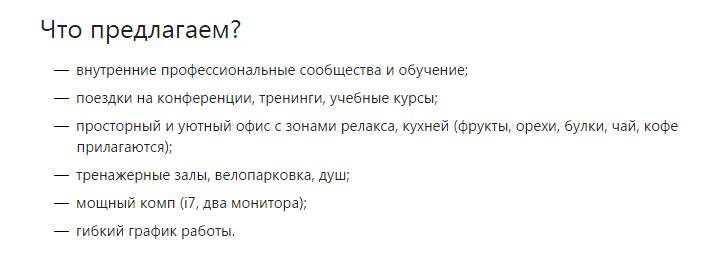
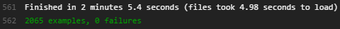
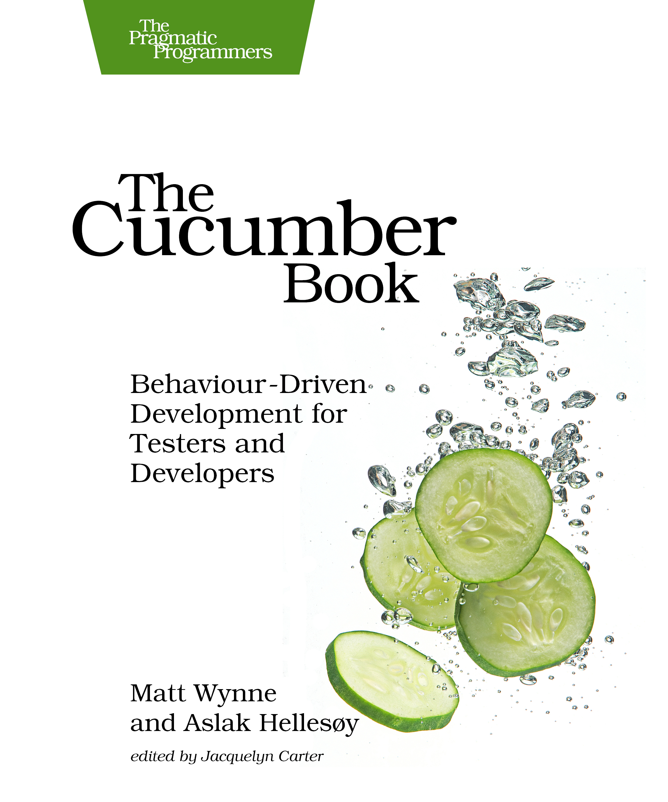

Заказная разработка в Контуре
Антон Рычков
Разработчики
Аналитик
Тестировщик
Шеф
ПМ
Изначально — аутсорс

Ruby-сты в Контуре
Что делаем?
Что используем?
В помощь тестировщику
Утилита для работы с API Диадока.
В качестве TCMT — Evernote.
Скрипты от разработчиков для генерации тестовых данных.
Майндкарты — Xmind.
Скриншотеры, Jira, хром-экстеншны ¯\_(ツ)_/¯
Процесс разработки
ТЗ на всё.
ТЗ-ревью менеджером проекта → тестировщиком → разработчиком.
Дизайн-ревью аналитиком + менеджером → тестировщиком.
Все задачи закрывает тестировщик.
Код-ревью обязательно двумя разработчиками.
График релизов определяется совместно с заказчиком. Заранее.
В релизе от 1 до 3 крупных фич.
PR в Github связаны с тикетом в Jira (надо допиливать).
Релиз скриптиком ¯\_(ツ)_/¯
Особенности тестирования
Тестовый стенд идентичен боевому.
ВСЕ тесты пишут разработчики (и на UI, да).
UI-тесты гоняются в браузере без графической оболочки — phantomjs.
Тестировщик проводит ревью тестов.
Немного цифр на примере одного из проектов:
2065 модульных + интеграционных тестов

183 cucumber-сценария
≈5.5 минуты на все тесты.
Пример UI-теста
Тесты пишут разработчики — это ок?
Плюсы:
тесты помогают следить за процессом написания кода
быстрая обратная связь для разработчика
код правится не отходя от кассы
в книгах тесты являются спецификацией — это так, мы проверяли.
Минусы:
на тесты у разработчиков уходит 30-40% времени
бывают излишки в тестах
тестировщик тоже хочет писать тесты.
Сокращаем время на разработку
Разработчики не пишут UI-тесты. Совсем. Этим занимается тестировщик.
Покрывать только важные и "хрупкие" части приложения.
Код-ревью до 11:00 каждого дня.
Что дальше?
Понять, какие части нового проекта "хрупкие и важные".
Резко начать писать UI-тесты.
Разобраться в модульных тестах.
Возможно, перевести текущие UI-тесты на уровень ниже. "Причесать" их.
Научиться писать тесты ≈ в одно время с написанием кода.
Пересесть на linux (?)
Ruby-сообщество и разработчики в помощь
Куча гайдлайнов, вебинаров и мануалов (даже на русском)
Книги по многим инструментам

Вопросы?
@antonrychkov
Fork me on GitHub